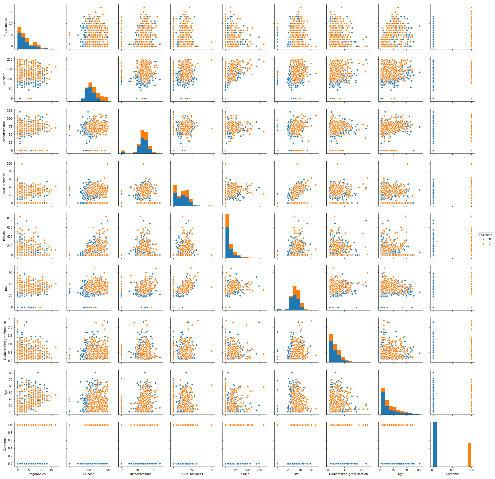
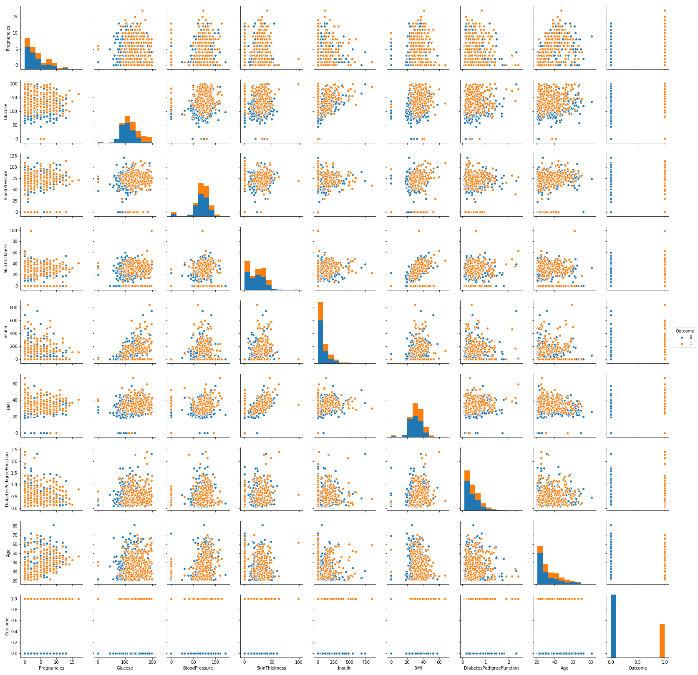

Diabetes is a disease which occurs when the blood glucose level becomes high, which ultimately leads to other health problems such as heart diseases, kidney disease etc. Diabetes is caused mainly due to the consumption of highly processed food, bad consumption habits etc. According to WHO, the number of people with diabetes has been increased over the years.
The Pima are a group of Native Americans living in Arizona. A genetic predisposition allowed this group to survive normally to a diet poor of carbohydrates for years. In the recent years, because of a sudden shift from traditional agricultural crops to processed foods, together with a decline in physical activity, made them develop the highest prevalence of type 2 diabetes and for this reason they have been subject of many studies. The dataset having:
Data: Download diabetes.zip from Kaggle.
Problem statement :The objective of the dataset is to diagnostically predict whether or not a patient has diabetes, based on certain diagnostic measurements included in the dataset.

 
